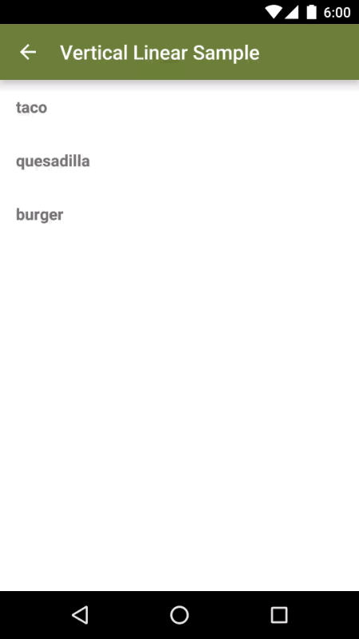
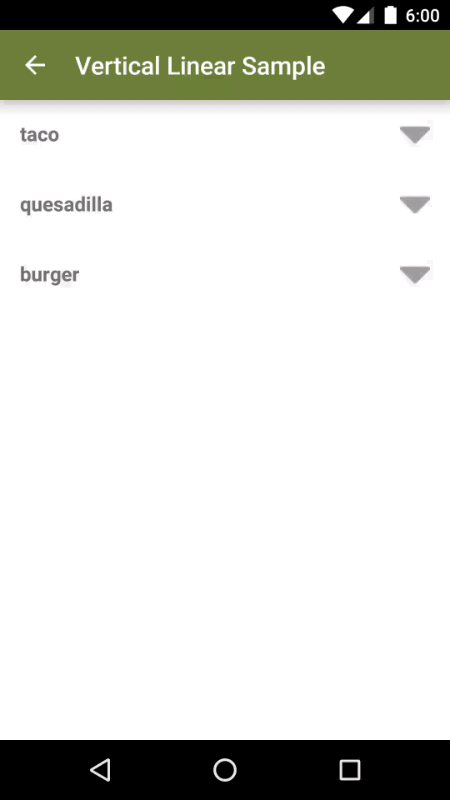
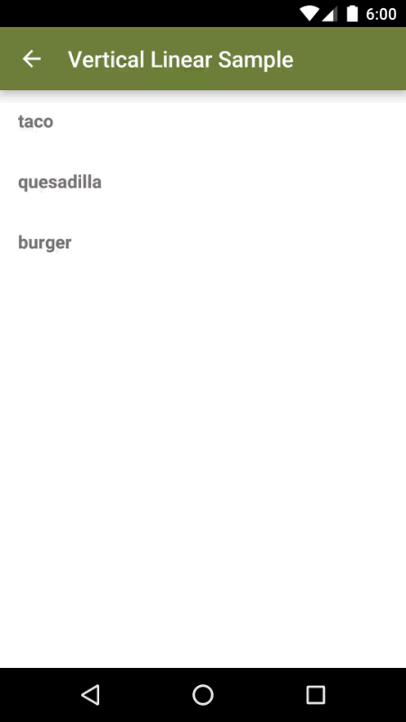

Expandable RecyclerView
A custom RecyclerView which allows for an expandable view to be attached to each ViewHolder

Overview
Expandable RecyclerView can be used with any stock Android RecyclerView to provide expandable items.

Basic Setup
First, define a stock RecyclerView in a layout file and inflate it in an Activity/Fragment as normal.
Define the parent/child relationship by implementing ParentListItem and overriding getChildItemList().
public class Recipe implements ParentListItem {
// a recipe contains several ingredients
private List mIngredients;
public Recipe(List ingredients) {
mIngredients = ingredients;
}
@Override
public List getChildItemList() {
return mIngredients;
}
@Override
public boolean isInitiallyExpanded() {
return false;
}
} Create two ViewHolders to hold parent and child views by extending ParentViewHolder and ChildViewHolder respectively. Handle the normal ViewHolder behavior by finding any views to be held, and implement a binding method.
public class RecipeViewHolder extends ParentViewHolder {
private TextView mRecipeTextView;
public RecipeViewHolder(View itemView) {
super(itemView);
mRecipeTextView = itemView.findViewById(R.id.recipe_textview);
}
public void bind(Recipe recipe) {
mRecipeTextView.setText(recipe.getName());
}
}public class IngredientViewHolder extends ChildViewHolder {
private TextView mIngredientTextView;
public IngredientViewHolder(View itemView) {
super(itemView);
mIngredientTextView = itemView.findViewById(R.id.ingredient_textview);
}
public void bind(Ingredient ingredient) {
mIngredientTextView.setText(ingredient.getName());
}
}Next, create an adapter that extends ExpandableRecyclerAdapter and takes parent and child ViewHolders as generic types. Unlike a normal RecyclerView.Adapter with a single set of onCreate and onBind methods, ExpandableRecyclerAdapter has a set for parent and another set for child ViewHolders
public class MyAdapter extends ExpandableRecyclerAdapter<RecipeViewHolder, IngredientViewHolder> {
private LayoutInflater mInflator;
public MyAdapter(Context context, @NonNull List>? extends ParentListItem< parentItemList) {
super(parentItemList);
mInflator = LayoutInflater.from(context);
}
// onCreate ...
@Override
public RecipeViewHolder onCreateParentViewHolder(ViewGroup parentViewGroup) {
View recipeView = mInflator.inflate(R.layout.recipe_view, parentViewGroup, false);
return new RecipeViewHolder(recipeView);
}
@Override
public IngredientViewHolder onCreateChildViewHolder(ViewGroup childViewGroup) {
View ingredientView = mInflator.inflate(R.layout.ingredient_view, childViewGroup, false);
return new IngredientViewHolder(ingredientView);
}
// onBind ...
@Override
public void onBindParentViewHolder(RecipeViewHolder recipeViewHolder, int position, ParentListItem parentListItem) {
Recipe recipe = (Recipe) parentListItem;
recipeViewHolder.bind(recipe);
}
@Override
public void onBindChildViewHolder(IngredientViewHolder ingredientViewHolder, int position, Object childListItem) {
Ingredient ingredient = (Ingredient) childListItem;
ingredientViewHolder.bind(ingredient);
}
}Finally, instantiate this adapter, passing in data, and hand to RecyclerView.
Ingredient beef = new Ingredient("beef");
Ingredient cheese = new Ingredient("cheese");
Ingredient salsa = new Ingredient("salsa");
Ingredient tortilla = new Ingredient("tortilla");
Recipe taco = new Recipe(Arrays.asList(beef, cheese, salsa, tortilla));
Recipe quesadilla = new Recipe(Arrays.asList(cheese, tortilla));
List<Recipe> recipes = Arrays.asList(taco, quesadilla);
mRecyclerView = (RecyclerView) findViewById(R.id.recyclerview);
MyAdapter adapter = new MyAdapter(this, recipes);
mRecyclerView.setAdapter(adapter);
Custom Expand/Collapse Button
By default, clicking the entire parent view will trigger expansion or collapsing. However, Expandable RecyclerView allows for one or more sub views to handle expansion/collapsing and ignore touch event on the parent view itself.
The ParentViewHolder implementation should override shouldItemViewClickToggleExpansion() to return false. Then set a click listener on the desired button within the ParentViewHolder implementation and call expandView() to trigger the expansion or collapseView() to trigger a collapse.
public class RecipeViewHolder extends ParentViewHolder {
private ImageView mArrowExpandImageView;
private TextView mRecipeTextView;
public RecipeViewHolder(View itemView) {
super(itemView);
mRecipeTextView = itemView.findViewById(R.id.recipe_textview);
mArrowExpandImageView = (ImageView) itemView.findViewById(R.id.arrow_expand_imageview);
mArrowExpandImageView.setOnClickListener(new View.OnClickListener() {
@Override
public void onClick(View v) {
if (isExpanded()) {
collapseView();
} else {
expandView();
}
}
});
}
@Override
public boolean shouldItemViewClickToggleExpansion() {
return false;
}
...
}Listening for Expansion/Collapse Inside Parent ViewHolder
To provide additional functionality inside the Parent ViewHolder when it has been expanded or collapsed, simply implement ParentViewHolder.onExpansionToggled(Boolean expanded). This is the perfect place to trigger additional transition animations, such as the rotating arrow animation in the above example.
Triggering Expansion/Collapse Programatically
Other components can trigger expansion/collapse programmatically. ExpandableRecyclerAdapter features expandParent(int position) and expandParent(ParentListItem parent) to expand a list item by its adapter position or by its own reference.
Similar methods exist for collapsing a list item: collapseParent(int position) and collapseParent(ParentListItem parent).
To expand or collapse all items in the list at once, use expandAllParents() and collapseAllParents().
Listening for Expansion/Collapse Outside of the Adapter
While ParentViewHolder.onExpansionToggled(boolean expanded) is useful for listening for view changes within individual parent views in the RecyclerView, Expandable RecyclerView also allows listeners outside of the Adapter to be notified of expand/collapse events. Simply create a ExpandableRecyclerAdapter.ExpandCollapseListener implementation and passing that implementation to the Adapter.
MyAdapter adapter = new MyAdapter(this, recipes);
adapter.setExpandCollapseListener(new ExpandableRecyclerAdapter.ExpandCollapseListener() {
@Override
public void onListItemExpanded(int position) {
Recipe expandedRecipe = recipes.get(position);
// ...
}
@Override
public void onListItemCollapsed(int position) {
Recipe collapsedRecipe = recipes.get(position);
// ...
}
});
mRecyclerView.setAdapter(adapter);Saving and Restoring Collapsed and Expanded States
It's possible to save the expanded/collapsed state of the items in the RecyclerView across device configuration changes, low memory, or any time onSavedInstance state would be called.
To save expanded/collapsed states call ExpandableRecyclerAdapter.onSaveInstanceState(Bundle savedInstanceState). To restore that state call ExpandableRecyclerAdapter.onRestoreInstanceState(Bundle savedInstanceState).
protected void onSaveInstanceState(Bundle savedInstanceState) {
super.onSaveInstanceState(savedInstanceState);
mAdapter.onSaveInstanceState(savedInstanceState);
}
@Override
protected void onRestoreInstanceState(@NonNull Bundle savedInstanceState) {
super.onRestoreInstanceState(savedInstanceState);
mAdapter.onRestoreInstanceState(savedInstanceState);
}During the life of the RecyclerView items may be added and removed from the list. Please note that the traditional notifyDataSetChanged() of RecyclerView.Adapter does not work as intended.
Instead Expandable RecyclerView provides a set of notify methods with the ability to inform the adapter of changes to the list of ParentListItems.
// Parent Changes
notifyParentItemInserted(int parentPosition)
notifyParentItemRemoved(int parentPosition)
notifyParentItemChanged(int parentPosition)
notifyParentItemRangeInserted(int parentPositionStart, int itemCount)
// Child Changes
notifyChildItemInserted(int parentPosition, int childPosition)
notifyChildItemRemoved(int parentPosition, int childPosition)
notifyChildItemChanged(int parentPosition, int childPosition)Download
Gradle
compile 'com.bignerdranch.android:expandablerecyclerview:2.1.1'Maven
<dependency>
<groupId>com.bignerdranch.android</groupId>
<artifactId>expandablerecyclerview</artifactId>
<version>2.1.1</version>
</dependency>Documentation
visit the JavaDocs
Contributing
Issues or Comments
If you have an idea for a feature enhancement or a bug fix, we'd love to know! We handle issue tracking using GitHub's issue system, so feel free to add your comment there.
Updates and Fixes
We also welcome all pull requests. We really love good commit messages and atomic commits.
The dev branch is used for future 2.X releases, so if you're adding a feature, we ask that you target the dev branch. If you have a bug fix, targeting master is your best bet. This way, we're flexible to pull in bug fixes as soon as possible.
License
The MIT License (MIT)
Copyright (c) 2014 Big Nerd Ranch
Permission is hereby granted, free of charge, to any person obtaining a copy
of this software and associated documentation files (the "Software"), to deal
in the Software without restriction, including without limitation the rights
to use, copy, modify, merge, publish, distribute, sublicense, and/or sell
copies of the Software, and to permit persons to whom the Software is
furnished to do so, subject to the following conditions:
The above copyright notice and this permission notice shall be included in all
copies or substantial portions of the Software.
THE SOFTWARE IS PROVIDED "AS IS", WITHOUT WARRANTY OF ANY KIND, EXPRESS OR
IMPLIED, INCLUDING BUT NOT LIMITED TO THE WARRANTIES OF MERCHANTABILITY,
FITNESS FOR A PARTICULAR PURPOSE AND NONINFRINGEMENT. IN NO EVENT SHALL THE
AUTHORS OR COPYRIGHT HOLDERS BE LIABLE FOR ANY CLAIM, DAMAGES OR OTHER
LIABILITY, WHETHER IN AN ACTION OF CONTRACT, TORT OR OTHERWISE, ARISING FROM,
OUT OF OR IN CONNECTION WITH THE SOFTWARE OR THE USE OR OTHER DEALINGS IN THE
SOFTWARE.